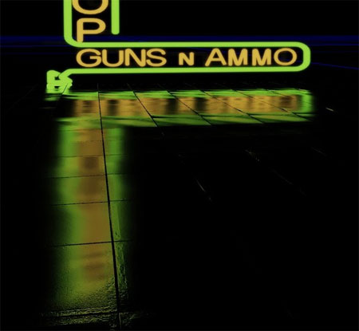
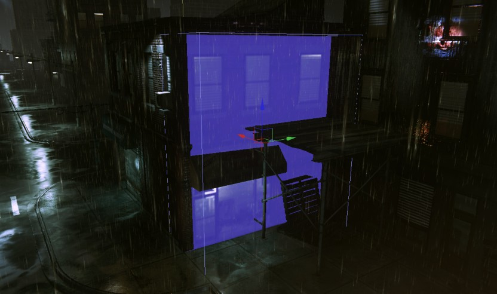
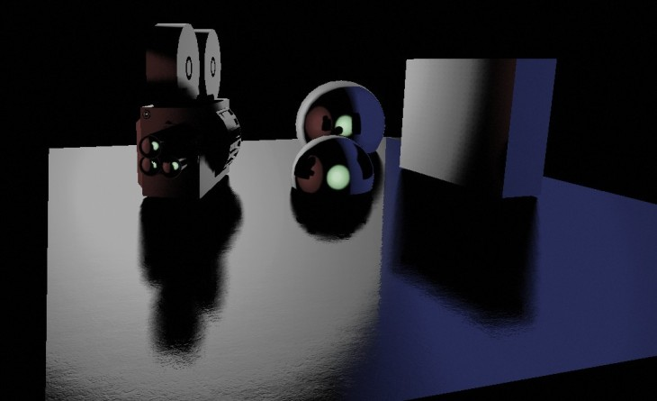
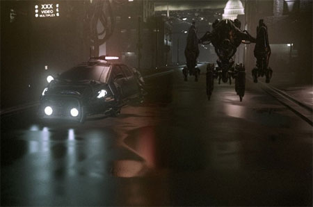
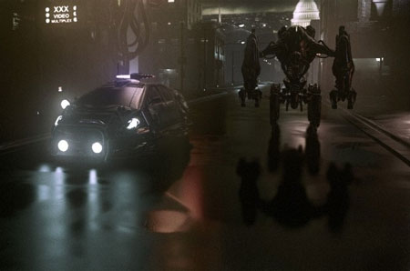

UDN
Search public documentation:
ImageBasedReflectionsCH
English Translation
日本語訳
한국어
Interested in the Unreal Engine?
Visit the Unreal Technology site.
Looking for jobs and company info?
Check out the Epic games site.
Questions about support via UDN?
Contact the UDN Staff
日本語訳
한국어
Interested in the Unreal Engine?
Visit the Unreal Technology site.
Looking for jobs and company info?
Check out the Epic games site.
Questions about support via UDN?
Contact the UDN Staff
基于图像的反射
文档变更记录: 由 Daniel Wright 创建。
概述
- ImageReflectionActors (贴图块)
- 启用了bUseImageReflectionSpecular的光源。
- 不透明表面呈现的粗糙的静态阴影。
- 动态物体的动态阴影，围绕ImageReflectionShadowPlane反射。

启用基于图像的反射
从空关卡中进行快速操练
- 添加一些静态网格物体或BSP
- 创建一个新材质，把值为1的Constant节点连接到Specular输入端，启用bUseImageBasedReflections，并把该材质分配给场景中的网格物体。
- 确保编辑器位于Lit（带光照）模式，如果没有光源，它将自动切换到Unlit（无光照）模式，那么反射现象就不会出现。
- 从Actor Classes（Actor类别）选卡中拖拽一个ImageReflectionActor，并将其放到您刚才放置的几何体的顶部。
- 对齐相机，以便您可以看到反射效果。默认情况下，ImageReflectionActor是单面的，所以您必须选转向机到另外一侧来查看反射效果。
特点
- HDR反射
- 任何表面都可以反射，不限于平面或点。
- 支持平面上的光泽变化。这对于类似于潮湿的马路这样的东西是有用的，这样水坑的地方会有镜像反射，而路面的其他地方产生更加有光泽的反射。
- 各项异性光泽 -反射光线会分布在多个方向。
- 动态组件 - 除了静态阴影之外的所有部分的反射都可以在运行时修改。
材指属性
- bUseImageBasedReflections - 启用或禁用这个材质上的图像反射。
- ImageReflectionNormalDampening - 阻尼抑制图像反射所使用的法线。这是有用的，因为对于漫反射光照来说潮湿表面的法线趋向于凸凹效果，而对于高光反射来说潮湿表面的法线较为平滑。该值越大法线越平滑(更像底下的顶点法线)，值为1意味着没有阻尼抑制，反射直接使用应用的法线。
- SpecularColor(高光颜色) - 缩放反射分布。
- SpecularPower(高光次幂) - 控制材质的光泽度。
ImageReflectionActors
- bEnabled - 是否启用反射。该项可以通过Matine切换轨迹进行控制。
- bTwoSided - 反射效果是否可以从两侧都能看到。
- ReflectionColor - RGB控制ReflectionTexture的颜色值, A控制亮度。该项可以通过Matine LinearColor（线性颜色）轨迹进行控制。
- ReflectionTexture -在反射时应用到这个方块上的贴图。
ReflectionTexture(反射贴图)限制
由于ReflectionTexture属性和D3D 11贴图数组结合使用，所以其属性有一些限制。这些限制是:- 尺寸必须是1024 * 1024。
- 格式必须是DXT5。
- 贴图组必须是TEXTUREGROUP_ImageBasedReflection。这个贴图组具有特殊的mip生成设置，用于模糊mip贴图，以便当放大它们时它们不会呈现出斑驳的块状。

 以下场景显示了任何表面都可以具有图像反射，该表面不一定必须是地平面。光泽度受到材质高光次幂和到反射体的距离的影响，这也是为什么地面上的反射比墙壁上的反射效果更有光泽的原因。
以下场景显示了任何表面都可以具有图像反射，该表面不一定必须是地平面。光泽度受到材质高光次幂和到反射体的距离的影响，这也是为什么地面上的反射比墙壁上的反射效果更有光泽的原因。

ImageReflectionSceneCapture（图像反射屏幕截图）
ImageReflectionSceneCapture基本上就是一个捕获一部分场景到其贴图中的ImageReflectionActor，它不需要用户手动地指出反射贴图。这些对于创建整个建筑物表面或者一些没有自发光贴图的对象上的反射效果是非常有用的。场景捕获截图将会在光照构建过程中更新；或者您可以通过右击并选择‘更新’来强制地更新它，这样就不必构建光照了。 属性- DepthRange(深度范围) - 控制捕获到贴图中的世界空间深度范围。当选中该项时，将会有一个线框显示当前范围的大小。
- ColorRange(颜色范围) - 用于把HDR源值放到LDR生成贴图中。默认值为4,这意味着在捕获的贴图中可以呈现的最大的颜色值是4。

环境贴图
- ImageReflectionEnvironmentTexture - 图像反射的全景环境贴图。应该把贴图展开，以便地平线沿着底部(v=0)，世界空间中的竖直向上沿着顶部(v = 1)。贴图的u方向对应着围绕世界坐标轴Z的旋转。
- ImageReflectionEnvironmentColor - 和ImageReflectionEnvironmentTexture相乘的颜色，alpha控制亮度。
- ImageReflectionEnvironmentRotation - 使的环境贴图围绕世界坐标轴Z旋转的角度，以度数为单位。

光源反射
- 长的条纹高光，就像您在雨夜中所看到的光线效果。
- 不受到光源光源影响半径区间限制的高光。
- 节约能量的高光 (较有光泽的区域具有较暗的反射效果，类似于镜面的区域具有较亮的反射效果)。

静态阴影

动态阴影

